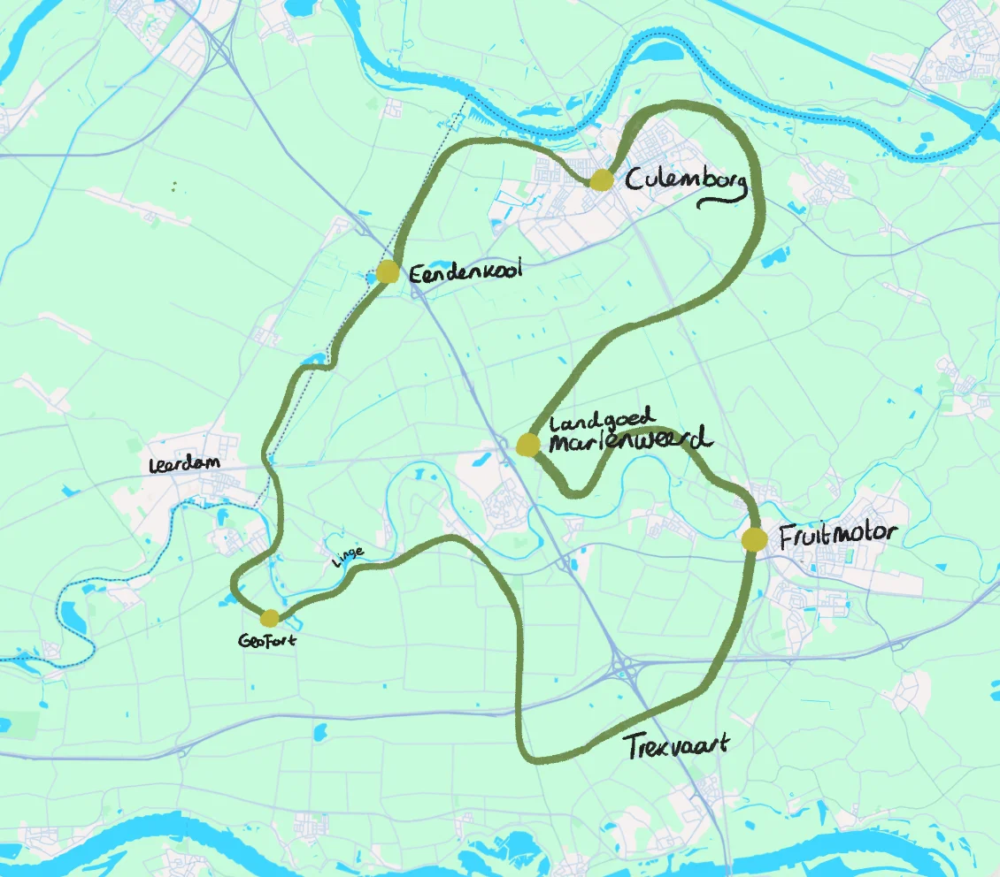

Het Pollinatorpad
Een thuis voor bestuivers, een belevenis voor jou
Samen creëren we een bloeiend lint van 30 kilometer door de Betuwe. Een levend landschap vol wilde bloemen, vlinders, bijen en biodiversiteit.
Doe mee!Een pad vol leven
Het Pollinatorpad is meer dan een wandelroute. Het is een initiatief van en voor de gemeenschap. We verbinden mensen, natuur en landschap in de prachtige Betuwe.
Voor bestuivers
Wilde bloemen, kruidenrijke bermen en bloeiende hagen creëren een doorlopende corridor waar bijen, vlinders en andere bestuivers het hele jaar door voedsel vinden.
Voor jou
Een prachtige wandel- en fietsroute door het Betuwse landschap. Geniet van bloeiende velden, ontdek de natuur en ervaar de seizoenen in al hun pracht.
Samen doen
Dit pad ontstaat door de inzet van bewoners, boeren, gemeenten en natuurliefhebbers. Iedereen kan bijdragen aan een groenere, levendiger Betuwe.
De route
30 kilometer door het hart van de Betuwe, van dorp naar dorp, van bloem naar bloem.
De voortgang
Meter voor meter groeit het pad. Volg hier de ontwikkeling.
Het Pollinatorpad door de Betuwe
De route verbindt Culemborg, Eendenkooi, Landgoed Mariënwaerd, Fruitmotor, Tienvaart, Goilberdingerwaard en Leerdom.
Onderweg ontmoet je diverse landschappen: van fruitboomgaarden tot rivieruiterwaarden, van bloeiende akkerranden tot oude dijken. Een route door het levende hart van de Betuwe.
We doen dit samen
Het Pollinatorpad ontstaat door de inzet van lokale bewoners, ondernemers en natuurliefhebbers. Jouw betrokkenheid maakt het verschil.
Plant mee
Help bij zaaiactiviteiten en plantdagen. Samen maken we de Betuwe groener.
Adopteer een stuk pad
Neem de zorg voor een deel van het pad op je. Van een paar meter tot een heel stuk.
Verspreid het woord
Vertel vrienden, familie en buren over het Pollinatorpad. Samen bereiken we meer.
Kom naar de opening
Vier mee bij de feestelijke opening in juni 2026!
Feestelijke opening!
In juni 2026 openen we Het Pollinatorpad officieel. Een dag vol wandelen, ontdekken en vieren. Met muziek, natuur en natuurlijk heel veel bloemen. Save the date!
Samen sterk
Het Pollinatorpad is een samenwerking tussen verschillende organisaties die zich inzetten voor biodiversiteit en natuurherstel in de Betuwe.
The Pollinators
Biodiversiteitsorganisatie met 6000+ distributiepunten
Gonzend Rivierenland
Natuurherstel in het rivierengebied
Lokale gemeenten
Partners in groen en biodiversiteit
Bewoners
Jullie maken het pad tot een succes